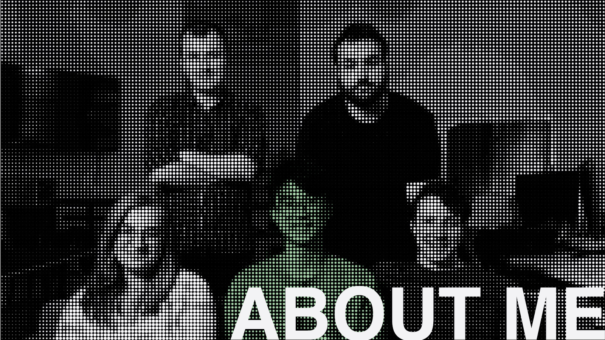
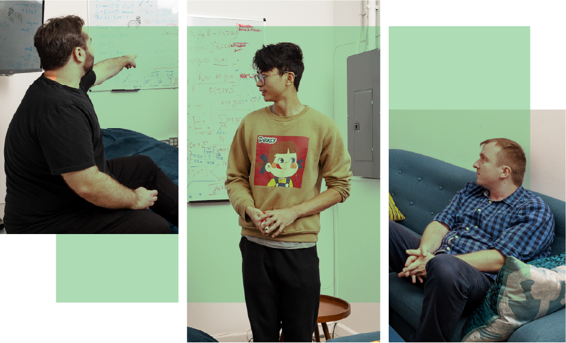
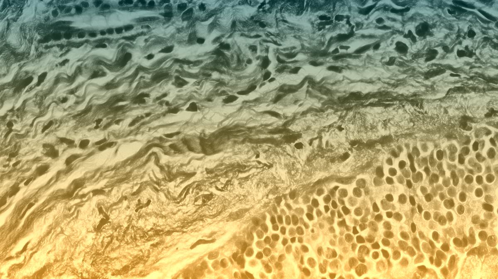

Ataraxis AI, co-founded by Jan Witowski and Krzysztof Geras, develops machine learning models to predict cancer outcomes and guide treatment decisions.

I joined Ataraxis AI in 2023 as one of the first two engineers while conducting research at NYU Langone Health. As part of a small founding team, I helped develop and validate multimodal pathology models across data from 15+ hospitals. This work contributed to early results that supported $4M in seed funding and later a $20M+ Series A.
RESEARCH GOAL
I build models to identify which patients benefit from treatment and which can safely avoid it.

RESEARCH FOCUS
My work focuses on building clinically reliable AI systems for oncology. I work on survival analysis, causal inference, and calibration methods to ensure model predictions reflect real-world outcomes.
A core part of this is developing multimodal models that combine histopathology images with clinical data to capture both tissue-level and patient-level signals.
SELECTED PUBLICATIONS
Improving Information Extraction from Pathology Reports using Named Entity Recognition
Ken Zeng
, Tarun Dutt, Jan Witowski, GV Kranthi Kiran, Frank Yeung, Michelle Kim, … Freya Schnabel, Linda M Pak, Yiqiu Shen, Krzysztof J Geras
Squeezing performance from pathology foundation models with chained hyperparameter searches
Joseph Cappadona, Ken Zeng
, Carlos Fernandez-Granda, Jan Witowski, Yann LeCun, Krzysztof J Geras
Multimodal Risk Prediction Model for Breast Cancer Recurrence
Jan Witowski, Ken Zeng
, Joseph Cappadona, … Francisco J Esteva, Lajos Pusztai, Yann LeCun, Krzysztof J Geras
POSTERS
Preliminary validation of a multi-modal AI for stratification of early-stage breast cancer patients utilizing a foundation model for digital pathology
San Antonio Breast Cancer Symposium 2024
Squeezing performance from pathology foundation models with chained hyperparameter searches
NeurIPS Self-Supervised Learning 2024
AI foundation model for breast cancer characterization and outcome prediction
European Society For Medical Oncology 2025
Aligning AI Recurrence Predictions with Real-world Recurrence Rates Through Survival Calibration
San Antonio Breast Cancer Symposium 2025
CONTACT
Email: kengaryzeng@gmail.com